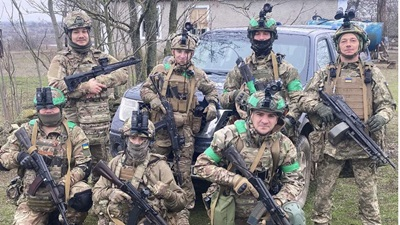

Лист до мами
Мам…
Я не за кордоном — я на сході.
Пробач, що не сказав я це відразу… я не зміг.
Я вже давно в холодному окопі,
Міцно стою — хоч не відчуваю ніг.
За правду, волю і за честь,
За рідну землю — готов я полягти.
Моя душа вже досить крові пролила…
Та все гаразд. Все добре. Чуєш — справді.
Я вистою на проклятій цій війні.
Окоп холодний — і там моя душа.
Я не знав, що таке війна…
Що смерть — це зовсім не слова,
Допоки в очі не побачив сам.
Молюся щодня я за життя.
Мене сімʼя чека у дома
Та, не знаю мам
Чи повернуся я.
В окопі поряд — побратим мій помирає…
Нажаль допомогти йому, не можу, я
Та вірю — прийде ця перемога,
І про Бога — я не забував…
